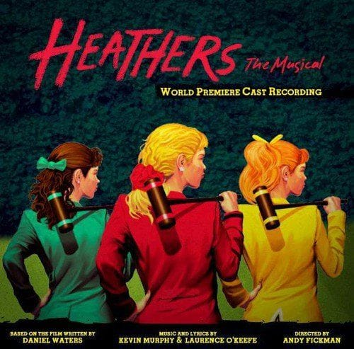
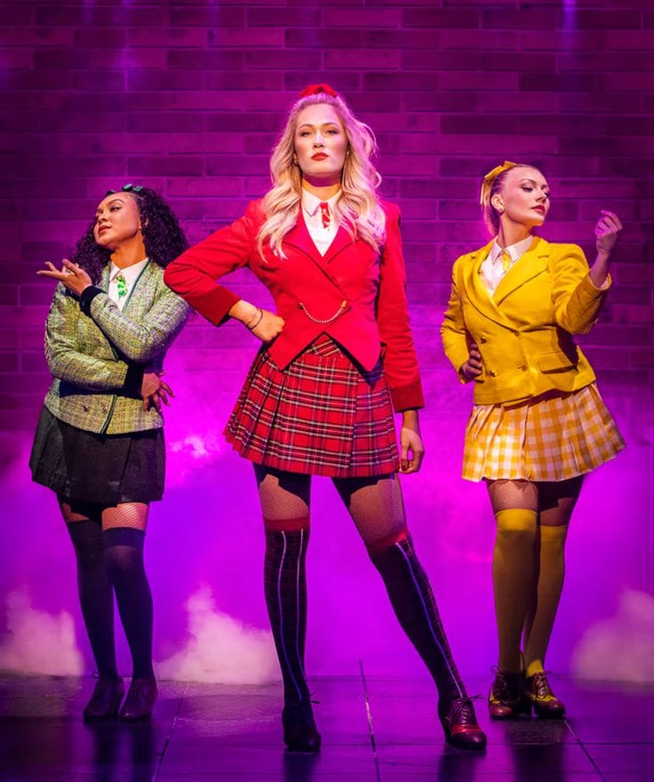

Un musical de humor negro, drama y adolescencia que explora la popularidad, la presión social, la amistad, el acoso y las consecuencias de querer encajar.

Heathers: The Musical está basado en la película Heathers de 1988. La historia sigue a Veronica Sawyer, una estudiante inteligente que desea formar parte del grupo más popular de su escuela.
En Westerburg High School, el grupo dominante está formado por tres chicas llamadas Heather Chandler, Heather Duke y Heather McNamara. Su influencia hace que muchos estudiantes quieran pertenecer a su círculo.
Veronica consigue entrar en el grupo, pero descubre que la popularidad también implica presión, crueldad y miedo a perder el estatus social.
Todo cambia cuando Veronica conoce a Jason Dean, conocido como J.D., un estudiante misterioso que tiene una visión mucho más oscura sobre la sociedad y las personas que lo rodean.
A partir de ese momento, Veronica comienza a enfrentarse a decisiones cada vez más difíciles. La historia utiliza humor negro y situaciones dramáticas para cuestionar la obsesión por la popularidad y la necesidad de ser aceptado por los demás.
Rojo: poder, autoridad y peligro.
Verde: cambio, ambición y crecimiento.
Amarillo: energía, juventud y apariencia.
Azul: inteligencia, aislamiento y reflexión.
| Año | Evento | Importancia |
|---|---|---|
| 1988 | Película original | Se presenta por primera vez la historia de Veronica Sawyer y las Heathers. |
| 2010 | Estreno del musical | La historia se adapta al teatro musical. |
| 2014 | Producción Off-Broadway | El musical obtiene una mayor difusión entre el público teatral. |
| 2018 | Adaptación televisiva | La historia vuelve a aparecer en una nueva versión audiovisual. |
| Personaje | Psicología | Papel en la historia | Canciones principales | Final |
|---|---|---|---|---|
| Veronica Sawyer | Inteligente, observadora y con una gran capacidad para adaptarse. Busca pertenecer a un grupo, pero poco a poco comprende que la popularidad no es lo que realmente desea. | Protagonista y principal punto de vista de la historia. | Seventeen, Dead Girl Walking, I Say No, Lifeboat | Decide enfrentarse a J.D. y romper con el ciclo de violencia y presión que se ha creado en Westerburg. |
| Heather Chandler | Dominante, segura de sí misma y acostumbrada a tener autoridad. Utiliza su popularidad para controlar a los demás. | Líder de las Heathers y principal representante del poder social dentro de la escuela. | Candy Store, Beautiful, Me Inside of Me | Su posición como líder cambia drásticamente después de un conflicto con Veronica y J.D. |
| Heather Duke | Ambiciosa e insegura. Desea ocupar el lugar que anteriormente tenía Heather Chandler. | Representa la lucha por conservar o conseguir poder dentro del grupo. | Candy Store, Never Shut Up Again | Termina ocupando una posición de poder entre los estudiantes, aunque la historia cuestiona el costo de esa popularidad. |
| Heather McNamara | Popular y aparentemente segura, pero en realidad tiene miedo de no ser aceptada y de perder su posición social. | Muestra que detrás de una imagen perfecta también puede existir vulnerabilidad. | Candy Store, Lifeboat, My Dead Gay Son | Después de atravesar una situación emocional difícil, comienza a comprender que necesita ayuda y apoyo. |
| Jason Dean (J.D.) | Inteligente, manipulador y profundamente resentido con la sociedad. Tiene una visión extrema de cómo solucionar los problemas. | Principal fuerza de conflicto y personaje que lleva a Veronica hacia decisiones cada vez más peligrosas. | Freeze Your Brain, Dead Girl Walking, Meant to Be Yours | Su conflicto con Veronica llega a su punto máximo y finalmente queda separado de ella después de enfrentarse a las consecuencias de sus decisiones. |
| Martha Dunnstock | Amable, sensible e insegura. Tiene dificultades para sentirse aceptada por sus compañeros. | Representa a los estudiantes que quedan fuera de los grupos populares. | Kindergarten Love Song, Lifeboat | Logra comenzar a recuperar su confianza y encuentra apoyo después de los acontecimientos de la historia. |
| Ram Sweeney | Popular, impulsivo y preocupado principalmente por su posición social. | Forma parte del grupo de estudiantes populares y de la dinámica social de Westerburg. | Blue, My Dead Gay Son | Su historia termina como consecuencia de los acontecimientos provocados por J.D. |
| Kurt Kelly | Seguro de sí mismo, competitivo y acostumbrado a recibir atención. | Representa junto a Ram la parte masculina del grupo popular de Westerburg. | Blue, My Dead Gay Son | Su historia también termina como consecuencia del conflicto central provocado por J.D. |

La historia de Heathers utiliza los colores, la ropa y las relaciones entre los estudiantes para mostrar las diferentes posiciones sociales dentro de Westerburg High School.
"Everybody wants to be popular."
Esta idea resume uno de los conflictos principales del musical: la presión de encajar y la importancia que los personajes dan a la opinión de los demás.
¿Qué personaje te parece más interesante?
| Número | Canción | Personaje(s) |
|---|---|---|
| 1 | Beautiful | Veronica y elenco |
| 2 | Candy Store | Las Heathers |
| 3 | Fight for Me | Veronica |
| 4 | Freeze Your Brain | J.D. |
| 5 | Dead Girl Walking | Veronica y J.D. |
| 6 | Seventeen | Veronica y J.D. |
| 7 | Lifeboat | Heather McNamara |
| 8 | Meant to Be Yours | J.D. |
| 9 | I Say No | Veronica |
| 10 | Seventeen (Reprise) | Veronica y J.D. |
| 11 | Shine a Light | Elenco |
| 12 | Kindergarten Love Song | Martha y Veronica |
El color rojo: representa la autoridad y la intensidad de Heather Chandler.
El color verde: representa el cambio y la ambición que aparecen durante la historia.
El color amarillo: representa la energía y la apariencia juvenil de Westerburg High School.
El color azul: recuerda a la identidad visual de algunas canciones y momentos relacionados con los estudiantes populares.
Lugar: Westerburg High School.
Objeto representativo: el cuaderno de Veronica, donde aparecen las relaciones y acontecimientos que conectan a los personajes.
Idea central: ser popular no significa necesariamente ser feliz.
Heathers — una historia donde la apariencia social puede ocultar problemas mucho más profundos.